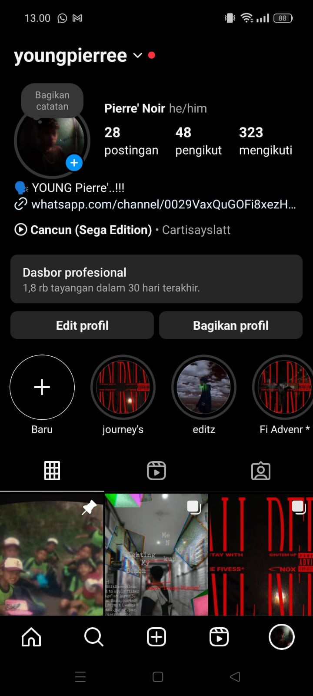

Berikut adalah analisis struktural dan fungsional dari kode HTML proyek “Instagram Design with Bootstrap†yang disusun secara humanis dan formal.
Kode ini merupakan representasi tampilan Instagram yang dibuat ulang dengan bantuan Bootstrap 5. Fokus utama adalah menciptakan antarmuka yang responsif, modern, dan menyerupai platform media sosial populer.
Mengimpor Bootstrap dan Bootstrap Icons, serta mendefinisikan font kustom (Billabong) agar mirip dengan logo Instagram asli.
Menggunakan ikon-ikon bi bi-* untuk navigasi: Home, Chat, Post, Explore, dan Profile. Desainnya ringkas dan intuitif.
Bagian ini menampilkan:
Gambar ditata dalam grid 3 atau 4 kolom tergantung lebar layar, menjaga proporsi kotak menggunakan aspect-ratio.
Footer sederhana bertuliskan © kelfin design, menjaga kesan bersih dan profesional.
Proyek ini menunjukkan pemahaman yang baik dalam membangun UI menggunakan Bootstrap. Ini sangat cocok dijadikan bagian dari portofolio untuk menunjukkan keterampilan desain front-end dan perhatian terhadap detail.
Pengembangan selanjutnya bisa mencakup fitur interaktif atau mode gelap untuk meningkatkan pengalaman pengguna.